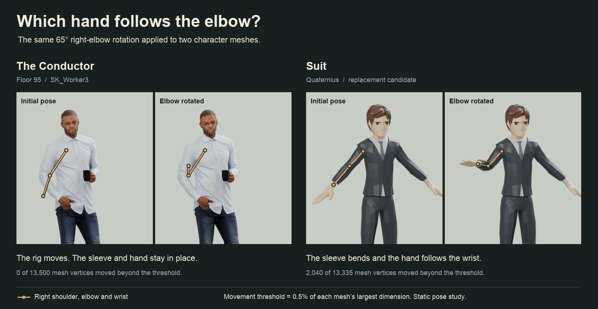

How it's made
One developer, one AI agent, no level files
Cut Cut Cut went from a late-night idea to a build on TestFlight in five days. This page is the technique: what the pipeline is, what the AI does and does not do, and what we got wrong.
The way of working
The owner directs. The agent builds. The game checks.
Pondd owns the game: the ideas, the taste, every decision. An AI coding agent (Claude Code) writes the C++, the Blender and Unreal scripts, the docs, and this site.
The loop is short. Pondd says what he wants, usually by voice. The agent builds it, compiles it, runs the game's own tests, films the result when asked, and reports what it did not verify. Pondd looks, says what is wrong ("the wrench is still not right", "she keeps running into nothing"), and the loop goes again.
Three rules keep it honest. Compile after every change. Never claim something was checked when it was not. Write everything down, so the next session, human or agent, can pick it up from the repository alone.


The pipeline
Eight techniques that carry the project
A tower built in code
Unreal Engine 5.8, C++ only, and no map asset. One game mode class lays out every floor when Rin arrives: walls, doors, furniture with a clear path to each exit, lights, enemies, the guardian's room.
- Floors come from a seed, so a climb can be replayed exactly.
- Each section has its own plan set, furniture kit and dress for the undying.
Characters rigged by script
Nothing is imported by hand. A Blender script, run headless, takes a source model, gives it a skeleton or renames its bones, carries it onto one of the game's shared skeletons, and thins it for the phone. An Unreal script brings it in.
- One skeleton for Rin and the sword bosses, one for the zombies, so clips are shared.
- Re-running the script rebuilds the character from source.
Existing models, credited
Guardians are cast like actors from free and licensed models: the Maintenance Chief is Paul N's "Bubba The Handyman"; three Elders are DarkPaperVerse sculpts; the Winter Widow came from Pondd's other game, Ink & Legend.
- We tried generating a human from scratch for the Chief. A ready-made model with character won.
- Every source and licence is recorded for the credits.
Animation from text, where it works
Some of Rin's on-the-spot moves were generated from a sentence, using Epic's experimental AnimGen plugins with NVIDIA's Kimodo motion model, running offline on a Mac.
- Good for a wind-up, a blade lock, a struggle, a taunt.
- Bad at locomotion: every generated walk and run kept the hips still. Movement comes from real animation packs.
2D art in one ink language
Portraits, title cards, the 52-card deck and the ending panels were made with an image model, art-directed to one look: graphic-novel ink, thick lines, strong silhouettes, a limited palette.
- The deck's letterforms, suit marks and borders are assembled by a script and printed to atlases.
- It was playtested on paper, printed, before it was coded.
A game that plays itself
A scripted player can climb the tower unattended. Automated tests check single fights (does the wrench hit, does a roll clear the second swing) and whole climbs to both endings.
- Balance was audited over dozens of seeded climbs per card policy.
- The same harness films the game: every video on this site was captured by script.
Voices and sound
Narration uses ElevenLabs. The Thai developer update is in Pondd's own cloned voice. Rin's English voice was chosen for the intro and its ID is recorded so the game uses the same one.
- The tower's section music and ending cues are generated from note-and-synthesis scripts.
- The intro's score and effects are synthesized in code; nothing is sampled.
Everything written down
The repository carries a handover document, a roadmap with release gates, the lore, a casting sheet for every boss, play audits, and a credits ledger. Comments in the code say why, in plain words.
- A new session starts by reading the handover, not by asking.
- What was not verified is listed as carefully as what was.
Worked example
Casting the Maintenance Chief
The floor-5 guardian was an ordinary zombie holding a wrench. He needed his own body.
Attempt one: build a broad, older mechanic from an open human generator. It worked technically, and it looked like nobody.
Attempt two: find an existing free model with character. Bubba The Handyman: denim overalls, plaid shirt, tool belt, cap. A script renamed his bones, cleared the animation that kept re-posing him, and carried him onto the zombie skeleton so he could play the clips the fight already used.
Then the wrench. Attached at the wrist, it floated. The fix was to place it from his finger joints each frame, so it sits in the fist. It took three rounds of "that wrench is still not right" to get there.

Worked example
Designing a fight on paper first
The Winter Widow's first version chased Rin and swung. On film she "kept running into nothing".
So the fight was written as a pattern before it was coded: she circles in rounds and stops to watch; close in she feints, and only the real cut glints; she backflips away and the landing is your opening; at range she throws frost a step ahead of where you are going; get frozen and she walks up, unhurried, for a heavy cut.
Each beat has a warning the player can read and an opening the player earns. Then the automated test confirmed her first real cut lands and a roll clears the next.
Tools
What is on the bench
Honest notes
What went wrong, so far
The nurse whose arms twisted
A zombie nurse model looked right standing still. On the shared zombie clips her arms corkscrewed. She was replaced the same day rather than repaired.
Rin does not run
Every generated run clip came out with still legs. Rin's "run" is her sword-set walk at 1.6 times speed, and it reads fine in an isometric view.
Checked is not the same as played
A fight can pass every automated test and still feel wrong in the hand. Frame rate, touch comfort and an unassisted human climb are still open on the list.
Four guardians are still stand-ins
They borrow another character's body and add a prop. They are being replaced one at a time, starting with the ones whose arms cannot move at all.